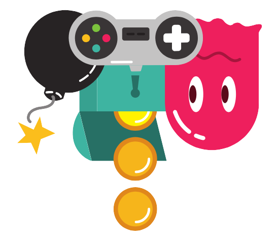

Bienvenido al portfolio de Martín García Curto
Descubre el gran número de proyectos desarrollados hasta la fecha.

Descubre el gran número de proyectos desarrollados hasta la fecha.
Mi nombre es Martín García y comencé mis estudios en los videojuegos cuando cuando vi la oportunidad de entrar en un Grado Superior de Animación 3D, Videojuegos y entornos interactivos. Tras terminar este curso decidí especializarme con un Máster en Diseño y Desarrollo de videojuegos. Me gusta experimentar, descubrir y aprender mientras desarrollo mis proyectos profesionales y personales.
Sígueme en mis redes Descarga mi CV5
8.5
10
Conoce de que trata cada uno antes de adentrarte en sus increibles mundos de aventuras.
13 Diciembre, 2024
Los titanes elementales han despertado, decididos a absorber todo el poder elemental del cual nacieron. Ante esta amenaza, los Elementales se han embarcado en una épica aventura para derrotar a los titanes y restaurar el equilibrio del mundo.
Conocer más21 Junio, 2024
Asumes el papel del astronauta A3008, quien es enviado a una base espacial para cumplir la misión de traer de regreso los objetos disonantes dispersos en diferentes mundos.
Conocer más22 Marzo, 2024
En Ludophatick, asumes el papel de un Slime naranja llamado Marvin McShooty, un adicto al juego que está decidido a gastar todo su dinero en el casino.
Conocer más22 Diciembre, 2023
En este Endless Runner te embarcarás en una épica Cruzada Sin Fin como Kyros, The Vengeance, un intrépido caballero en una búsqueda interminable para recolectar todas esas almas que han sido cristalizadas por las fuerzas oscuras.
Conocer más4 Marzo, 2024
Un cocinero manazas, mientras prepara un perrito caliente, se le escurre la salchicha de las manos. Ayuda a la salchicha a escapar del restaurante.
Conocer más5 Febrero, 2023
Tras la inundación de la capital, la estatua de Neptuno despierta de su letargo. Incapaz de moverse por su cuerpo de piedra, debe utilizar su tridente para defenderse de oleadas de criaturas que querrán acabar con él.
Conocer más